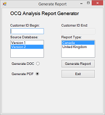
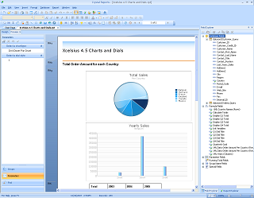
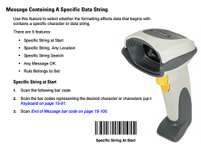
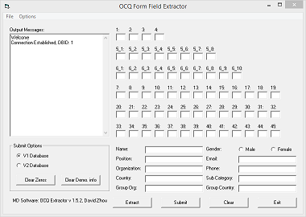

This is a selection of my project work, some from work, some from school, and some for personal enjoyment. If you're into that kind of thing, you can see my GitHub activity here.

2014, maintenance ongoing
Bottom line: Using unconventional methods I fixed a program for which I did not have the source code.
When I started working with MCB in 2009, they already had the report generation side of the process automated, but the developer that created that program has long since left and did not leave behind the source code.
For a long time this wasn’t a major problem, whenever the program wouldn’t run properly, we just found workarounds such as manually editing the report generated. The first big problem came when we started upgrading our hardware and discovered that the application could not run on x64 systems. In simple terms, the program was compiled (built) with the target CPU set to “any CPU” despite making use of x86-only components like Microsoft Jet.
The fix should have been relatively simple, all that needed to be done was to recompile the project with the target CPU set to “x86”. Unfortunately I didn’t have source code. The conventional way of doing things would have been to recreate the project, but for many years my programming skill was not up to task.
After several months of remote-accessing an x86 server for the sole purpose of running this one program, I got fed up and found a way to decompile the program. Good news was the decompiler ran like a charm. Bad news was the decompiled code was in a language I was unfamiliar with (C#) and the code was riddled with errors because many of the components it used were antiquated.
Luckily, C# was similar to Java and easy to learn. After an afternoon of googling and experimenting, the program emerged fixed –and with extra features like generating reports in PDF, and batch processing.

2014
Bottom line: As a development support resource, I resolved long outstanding issues and helped upgrade legacy systems, saving on licensing costs.
I worked for Aboriginal Affairs and Northern Development Canada (AANDC) as a student software developer in the summer of 2014. The team I was on supported a web application that managed the infrastructure, housing, and water infrastructure on First Nations across Canada.
My primary purpose on the team was to aid in development tasks, specifically in tackling the low-priority but long-outstanding bugs and change requests. Examples include a document difference tool that broke on HTML columns and correcting fields whose use cases went out of date and contained mostly junk information.
My final 'project' during the summer was to upgrade a system that used an older version of SAP Crystal Reports. This system was the only active remaining project that still used the older version, creating an extra cost to retain the license. The system didn't have a dedicated team any more so my supervisor offered to have me take a look with his help.
Over two weeks, I upgraded the system to the new version. Some of the challenges during the upgrade included dealing with fields that no longer existed and differences between the production version of the software and the source code that was available to us (there was a consultant who was brought in briefly at one point the fix some bugs). During the course of the upgrade I also fixed a few bugs.

2013
Bottom line: The time it took for me to enter the data for a parcel dropped from an average of 1 minute to 10 seconds.
From the summer of 2013 onwards, I worked in postal customs as a Student Border Services Officer at the Léo-Blanchette Mail Processing Plant. My duties were primarily to rate parcels for taxes using a computer system. I noticed two things after a month of work: 1) many parcels were repeats (e.g. the information entered for a large batch of parcels would be the same) 2) the barcode scanners we used could be programmed with rules to repeat the keys I pressed on the keyboard.
I then proceeded to do research on the barcode scanners and found a method to program them. Using the reference guides, I created a series of special barcodes that automated the entry of data once I made a decision about the parcel’s rating.
During the time I worked at the customs, I continued to develop the system. My efforts focused on reducing the average number of barcodes required per parcel and to increase the range of parcels for which I could automate data entry. When I moved on from this job, I left a simplified programming instruction sheet that allowed anyone to program the scanners simply by scanning across the sheet.

2009 - 2011, maintenance ongoing
Bottom line: The time it took to submit one questionnaire dropped from an average of 2 minutes to 20 seconds.
The OCQ Extractor “suite” has been my pride and joy since 2009. It was around this time that my mom started working with Lionel Laroche, the president of MultiCultural Business Solutions. MCB (as we call it) had a product all the Organization and Culture Questionnaire that took client responses and quantified cultural differences in work-related behaviours.
The problem was that despite being 2009, the company was still largely entering the questionnaires into their database by hand. Wanting to be supportive of my mom, I helped out on a few occasions and immediately realized how urgently this process needed to be automated.
I took the existing questionnaire and using existing functionality in word, added bookmarks to the form fields to make it software-readable. I then built a program to extract the information, display it on screen, and allow changes to be made before submitting it to the existing database to await processing by another program.
Suffice to say it saved quite a bit of time. In addition to this program I also wrote a few utility programs that checked the database and returned questionnaire files as well as a quick program that converts .DOC files to .PDF files in batches.
The utility programs and the extractor program were all written in Visual Basic but also make use of Microsoft Jet, Microsoft Access, and Microsoft Word.